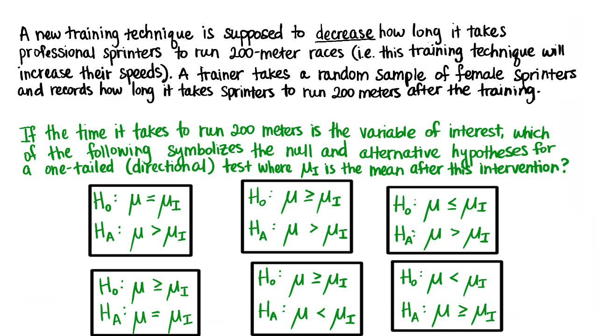

01. 10. 假说
- 假说
Start Quiz:

INSTRUCTOR NOTE:
有一项新的训练技术，希望可以缩短职业短跑运动员完成 200 米比赛的用时（即提高奔跑速度）。一名教练随机挑选了一些女性短跑动员，让她们接受此项新训练技术，然后记录他们完成 200 米比赛的用时。
如果我们关注的变量是完成 200 米比赛的用时，下面哪一个选项正确表示了单尾检验的零假设和对立假设？（µ-I 代表训练后成绩的均值 ）